What to Wear on a photoshoot
When preparing for a photoshoot, choosing the right outfit is just as important as finding the perfect location or striking the right pose. Your clothing can significantly impact the overall aesthetic and mood of your photos, as well as reflect your personal style. In this article, we will provide you with essential tips and guidance on what to wear for a photoshoot, helping you look and feel your best in front of the camera.
1. Consider the Purpose and Style of the Photoshoot
The first step in selecting your outfit is to consider the purpose and style of the photoshoot. Are you going for a casual and relaxed look or aiming for a more formal and sophisticated vibe? Think about the overall theme and mood you want to convey through your photographs. For instance, if it's a family photoshoot, you might want to coordinate outfits to create a cohesive and harmonious look. On the other hand, if it's a personal portrait session, you can opt for outfits that showcase your individuality and personal style.
2. Choose Solid Colors and Avoid Busy Patterns
Solid colors are generally a safe choice for photoshoots as they tend to photograph well and draw attention to the subject rather than the clothing itself. Choose colors that complement your skin tone and enhance your features. Neutral tones such as white, black, gray, or beige are versatile and timeless. Bold and vibrant colors can add energy and visual interest to the photos. However, it's generally advisable to avoid wearing clothing with busy patterns, large logos, or distracting graphics, as they can take the focus away from you.
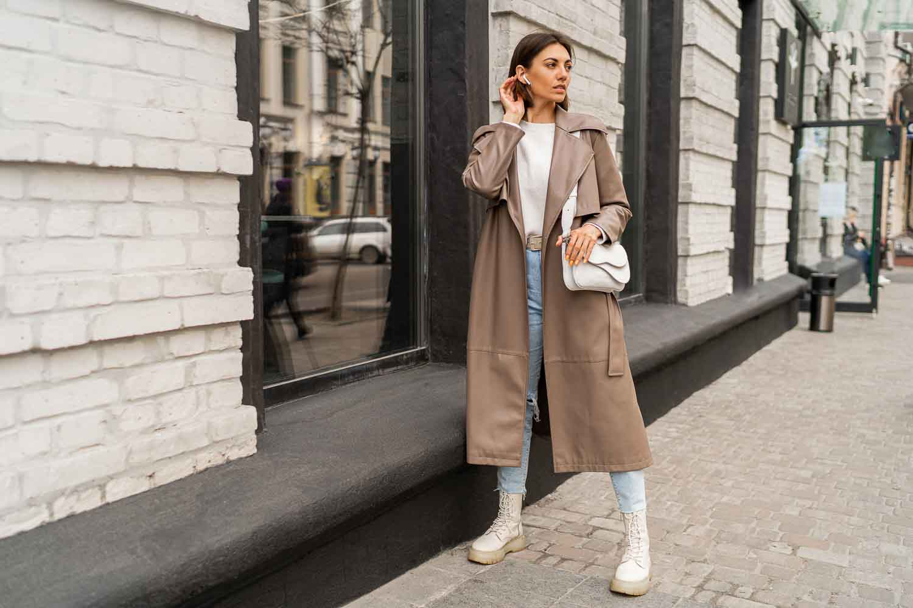 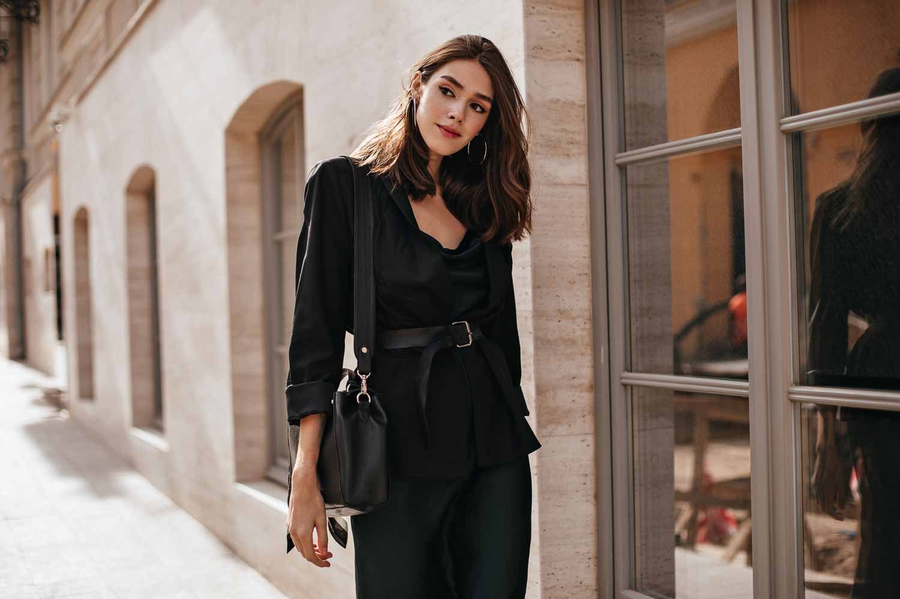3. Dress for the Location and Season
Consider the location and season when planning your outfit. If you're shooting outdoors, consider the colors and textures of the surroundings. For example, earthy tones and natural fabrics can blend beautifully in a forest or park setting, while bright colors can pop against an urban backdrop. Similarly, choose fabrics and layers appropriate for the weather. Light and breathable fabrics work well for summer shoots, while cozy sweaters and scarves are perfect for autumn or winter sessions. Ensure that your outfit allows you to move comfortably and suits the overall ambiance of the location.
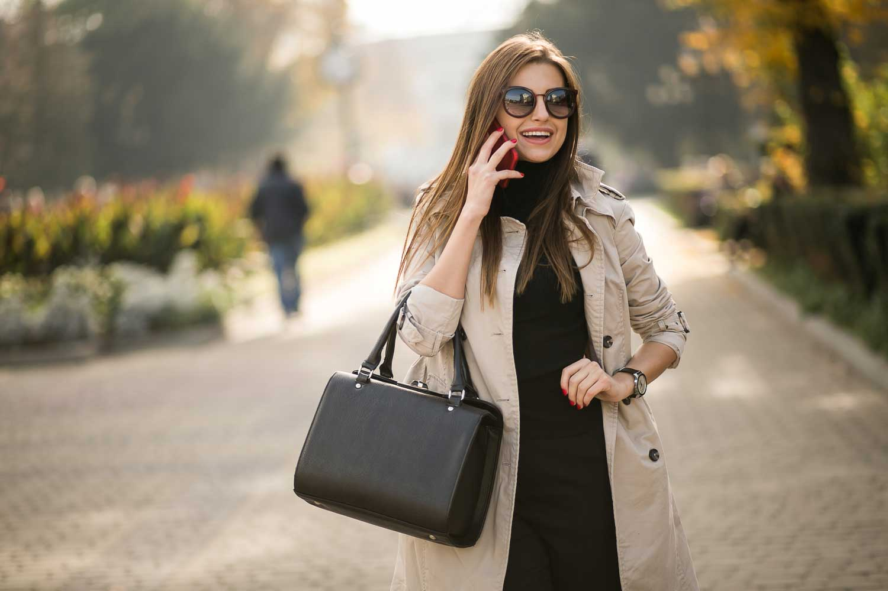 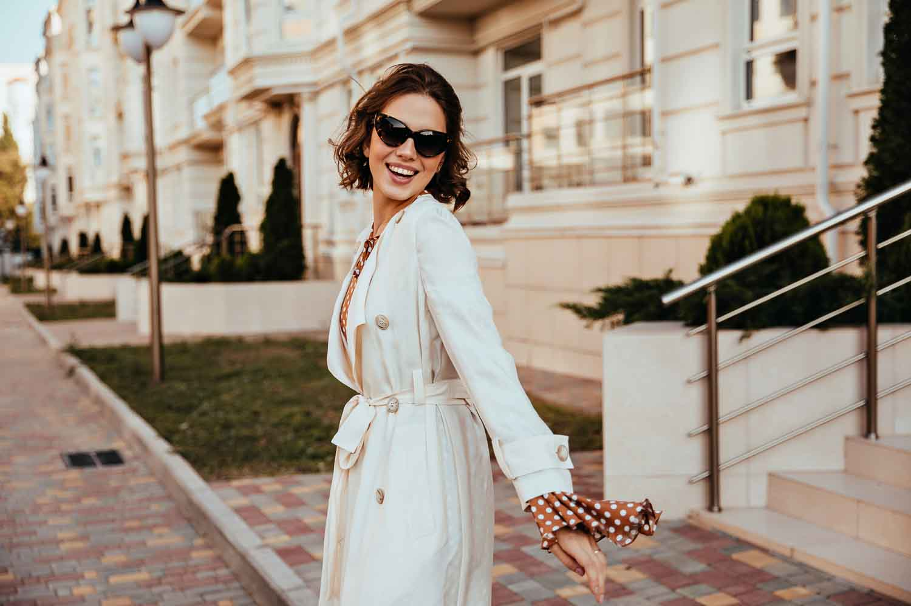 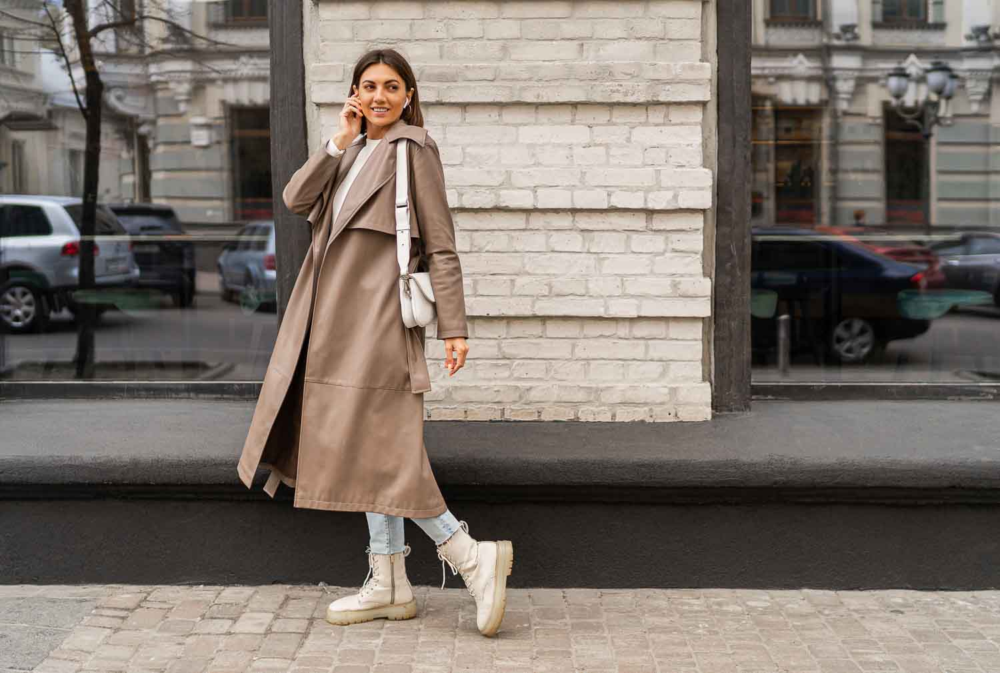4. Pay Attention to Fit and Flattery
The fit of your clothing plays a crucial role in how you appear in photos. Choose outfits that fit well and flatter your body type. Avoid clothes that are too tight or too loose, as they can distort your shape. Consider your best features and select outfits that accentuate them. For instance, if you have great legs, opt for a skirt or dress that showcases them. Additionally, pay attention to necklines, sleeve lengths, and waistlines that complement your face shape and body proportions.
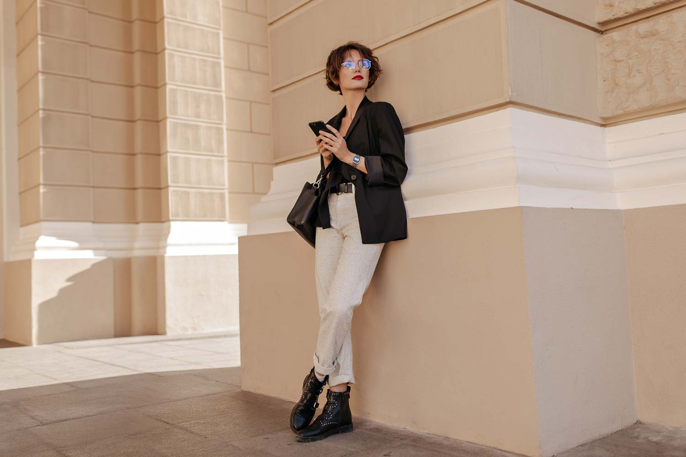 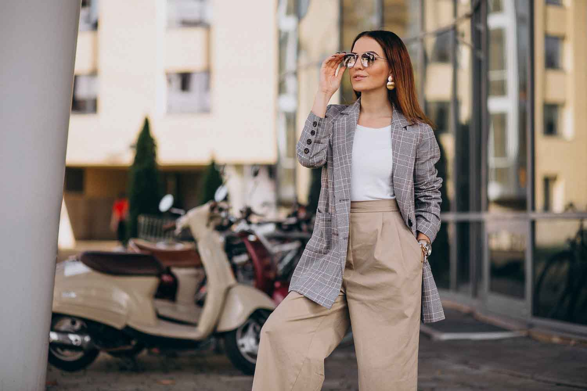 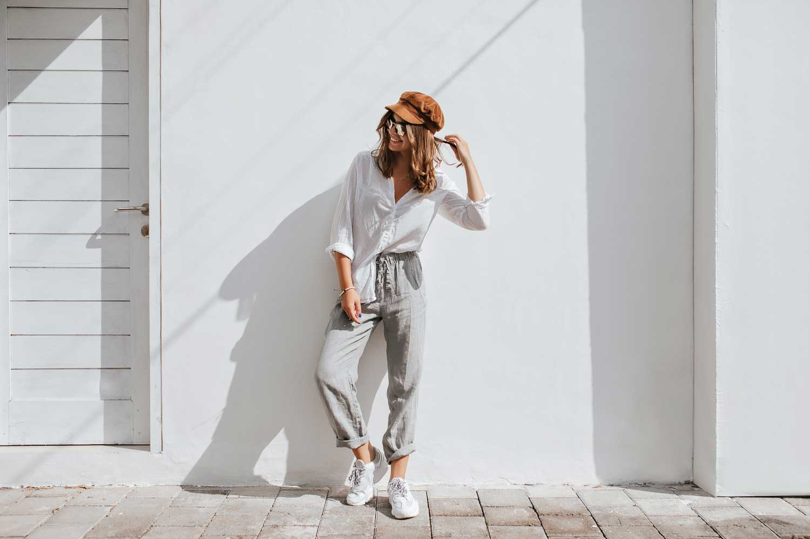5. Accessorize Thoughtfully
Accessories can add personality and interest to your outfit, but it's important to use them thoughtfully. Choose accessories that enhance your overall look rather than overpower it. Simple jewelry, scarves, hats, or belts can be great options to add visual appeal and individuality. Avoid wearing accessories that may reflect light and distract from your face, such as overly shiny or reflective items.
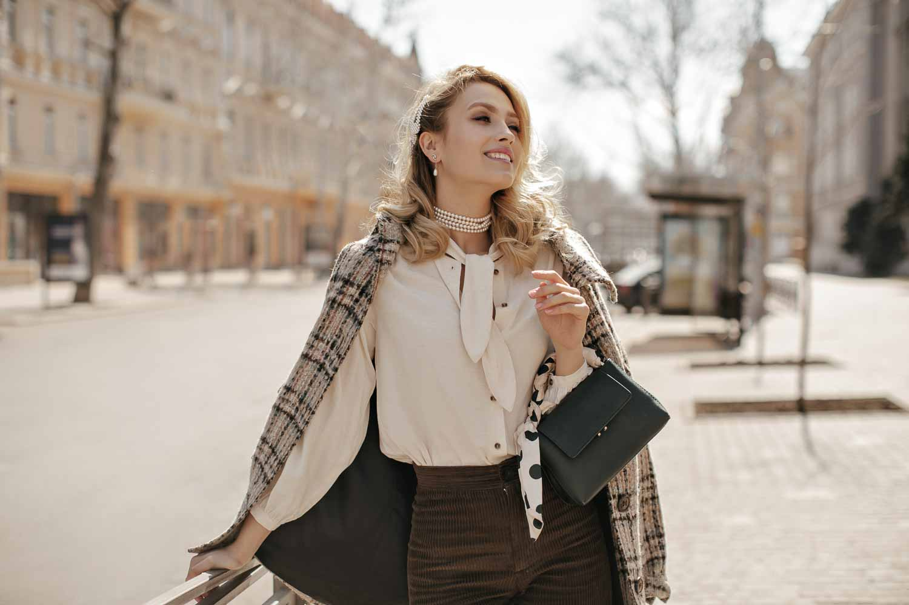 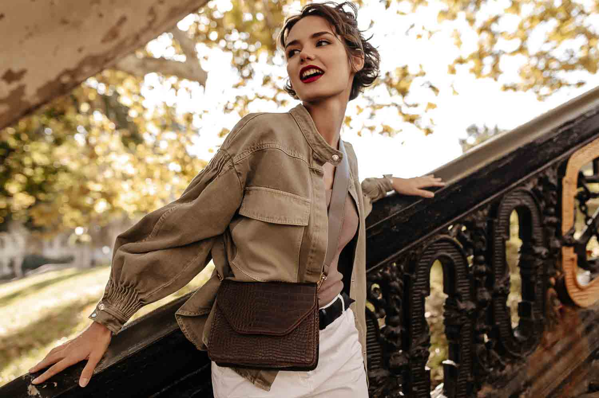 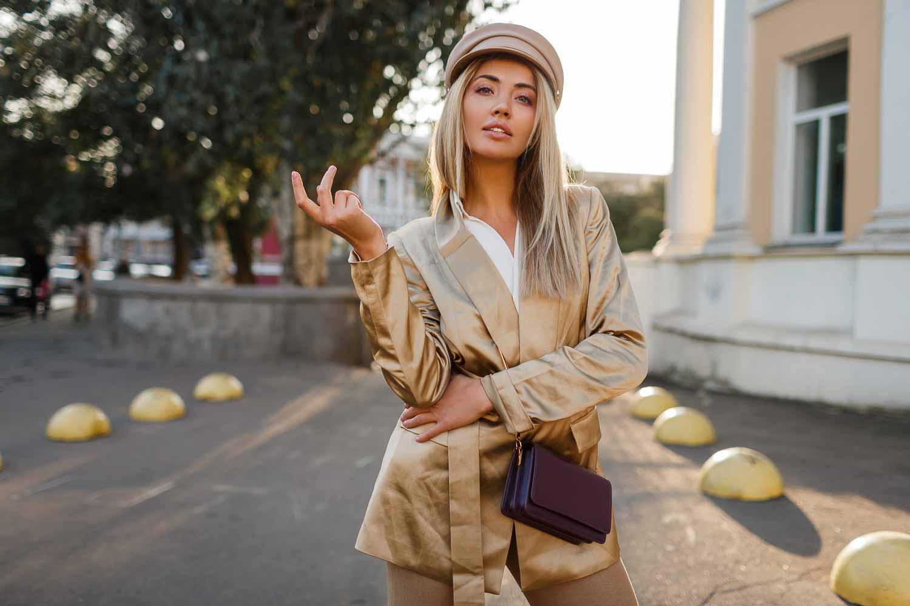